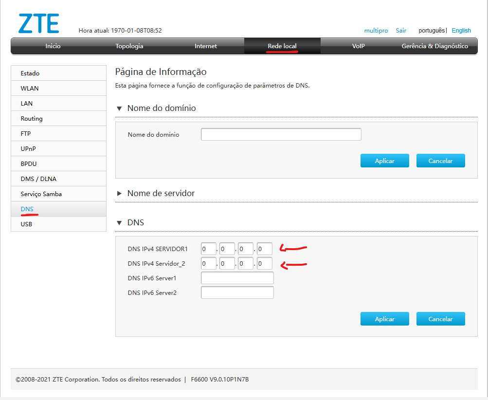
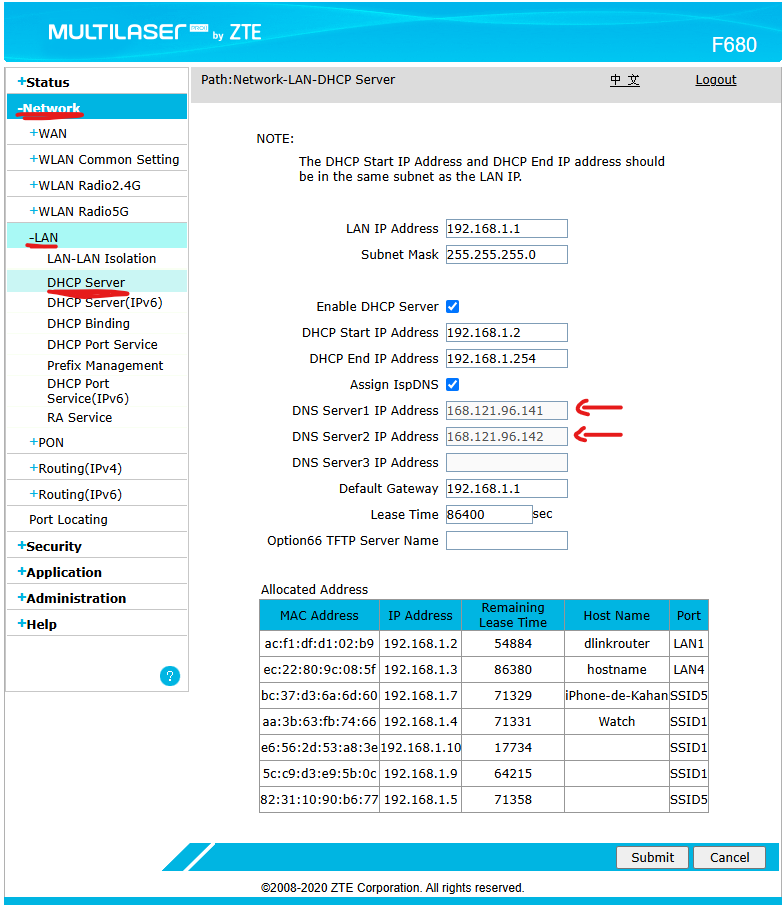

Configuração DNS - CAT | TrixNet
Oque é DNS ?
DNS (Domain Name System) é um sistema que traduz nomes de domínio (como google.com) em endereços IP (como 142.250.190.78). Ele funciona como um "guia telefônico" da internet, permitindo que os usuários acessem sites usando nomes fáceis de lembrar, em vez de números IP difíceis de decorar.
Passo a passo de como configurar DNS F6600 (Interface cinza)
Para acessar o DNS na ONU cinza, segue abaixo:
Passo a passo de como configurar DNS F680 (Interface azul)
Para acessar o DNS na ONU azul, segue abaixo:
⚠️ Importante
Sempre importante estar usando o DNS padrão do provedor para que assinante não venha a ter dificuldades de navegação, que são:
DNS Primario (SERVER 1): 168.121.96.141
DNS Secundario (SERVER 2): 168.121.96.142